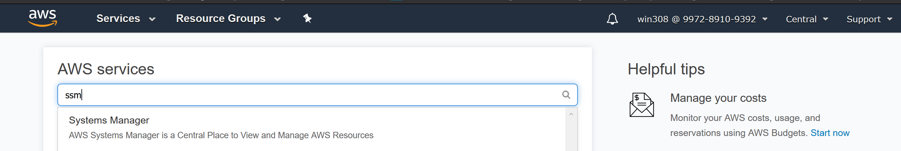
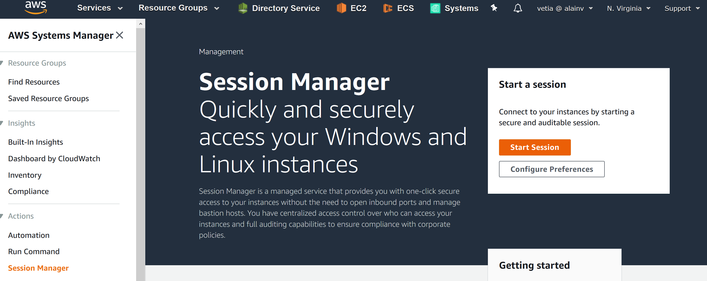
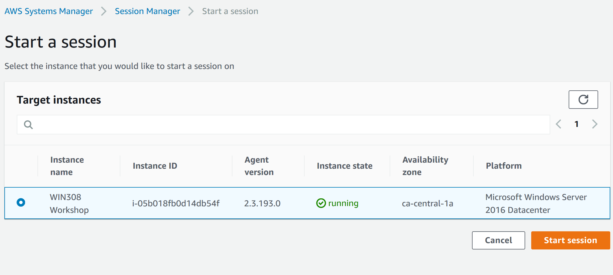
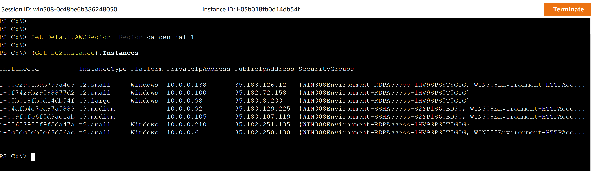

Challenge 1: Configuring resources using AWS Tools for Windows PowerShell
You are the IT administrator of your company and you manage an important ec2 fleet of windows and linux instances. You have identified multiple misconfigurations inside your fleet from your compliance reports and defined the following required tasks for remediation:
- Task 1: All instances are missing the tag "Cost Center : IT"
- Task 2: All instances without the tag "Tier : WebServer" should be protected against termination
You are required to provide individual powershell scripts using AWS Tools for Powershell to automate these tasks.
To get started you can either RDP to the machine provided to you as part of the prerequisites of this workshop or you can discover the new Session Manager feature from System Manager to get access to your management instance directly form the AWS Console.
If you want to discover session manager, follow the steps below.
-
Login to AWS management console
-
Log to AWS console using your provided credential.
-
Ensure to select the Norther Virginia (us-east-1) region
-
Click on service and select Systems Manager (ssm)

-
Connect to your workshop instance using Session Manager.
-
From the SSM console, click on Session Manager then Start Session

- Select the "Visual Studio Workshop" instance and click on start session. If you see a message telling you that your SSM agent is not up to date, click on “update SSM agent” to update the agent running on the instance.

-
You are now connected into a powershell shell into your running instance through session manager.
-
Start by setting your default aws region to ca-central-1 and run the command (get-ec2instance).instances to list your existing ec2 instances.
Set-DefaultAWSRegion -Region us-east-1 (Get-EC2Instance).Instances

Tools Description
-
AWS Tools for Powershell: The AWS Tools for PowerShell let developers and administrators manage their AWS services and resources in the PowerShell scripting environment. Now you can manage your AWS resources with the same PowerShell tools you use to manage your Windows, Linux, and MacOS environments. AWS Tools are available also for Powershell Core which can then be used on MacOS and Linux operating system as well.
-
AWS System Manager - Session Manager: Session Manager is a fully managed AWS Systems Manager capability that lets you manage your Amazon EC2 instances through an interactive one-click browser-based shell or through the AWS CLI. Session Manager provides secure and auditable instance management without the need to open inbound ports, maintain bastion hosts, or manage SSH keys. Session Manager also makes it easy to comply with corporate policies that require controlled access to instances, strict security practices, and fully auditable logs with instance access details, while still providing end users with simple one-click cross-platform access to your Amazon EC2 instances.
Hints
-
Task 1: Create a list that contains all instances which don't have the required tag. Create a variable which contains the desired tag to set then call your instance list to set the tag through a pipe.
-
Task 2: Create a list for all instances missing the tag "Tier : Webserver" then use a pipe to pass the terminate protection cmdlet.
-
All AWS tools for powershell commands required for this challenge rely on the Amazon Elastic Compute service commands of the tools, you can see a reference of these commands here or by running the command:
powershell Get-AWSCmdletName -Service "Amazon Elastic Compute Cloud"